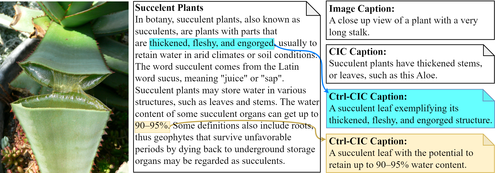

Controllable Contextualized Image Captioning: Directing the Visual Narrative through User-Defined Highlights
- Shunqi Mao 1
- Chaoyi Zhang 1
- Hang Su2
- Hwanjun Song 3
- Igor Shalyminov 2
- Weidong Cai 1
- 1University of Sydney
- 2AWS AI Labs
- 3KAIST


Overview
Contextualized Image Captioning (CIC) evolves traditional image captioning into a more complex domain, necessitating the ability for multimodal reasoning. It aims to generate image captions given specific contextual information. This paper further introduces a novel domain of Controllable Contextualized Image Captioning (Ctrl-CIC). Unlike CIC, which solely relies on broad context, Ctrl-CIC accentuates a user-defined highlight, compelling the model to tailor captions that resonate with the highlighted aspects of the context. We present two approaches, Prompting-based Controller (P-Ctrl) and Recalibration-based Controller (R-Ctrl), to generate focused captions. P-Ctrl conditions the model generation on highlight by prepending captions with highlight-driven prefixes, whereas R-Ctrl tunes the model to selectively recalibrate the encoder embeddings for highlighted tokens. Additionally, we design a GPT-4V empowered evaluator to assess the quality of the controlled captions alongside standard assessment methods. Extensive experimental results demonstrate the efficient and effective controllability of our method, charting a new direction in achieving user-adaptive image captioning.
BibTeX
If you find our project useful in your research, please cite:
@InProceedings{Mao_2024_ECCV,
author = {Mao, Shunqi and Zhang, Chaoyi and Su, Hang and Song, Hwanjun and Shalyminov, Igor and Cai, Weidong},
title = {Controllable Contextualized Image Captioning: Directing the Visual Narrative through User-Defined Highlights},
booktitle = {Proceedings of the 18th European Conference on Computer Vision (ECCV)},
year = {2024}
}